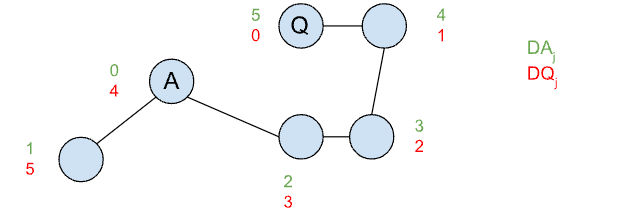

The labyrinths of Wonderland can be viewed as a undirected graph. If Alice can get to a cycle before the Queen can reach her, then Alice will be safe. This is because Alice can always pick a direction of travel away from the Queen around the cycle. Conversely, if Alice cannot get to a cycle before the Queen, then the Queen will catch her after at most $$$2 \times \mathbf{J}$$$ moves. Every second move, Alice may move to a node, so after $$$2 \times \mathbf{J}$$$ moves Alice must have entered a cycle because otherwise the Queen would have caught Alice.
Using these observations, we can formulate a dynamic programming solution. Define a recursive
function solution(alice, queen, total_moves) that is true if the Queen can catch
Alice in at most total_moves with both moving optimally and false otherwise.
The solution to the problem is the minimum value for total_moves such that
solution($$$\mathbf{A}$$$, $$$\mathbf{Q}$$$, total_moves) is true. If it is never true, then Alice is safe.
We can compute solution(alice, queen, total_moves) using a recurrence relation in
which we try all moves for the Queen and all moves for Alice in two nested loops calling
solution recursively. The Queen is always trying to make the answer true, and
Alice is always tryng to make it false.
An upper bound on the complexity of our solution is $$$O(\mathbf{J}^5)$$$, since there are $$$O(\mathbf{J}^3)$$$ states and computing a state requires at most $$$O(\mathbf{J}^2)$$$ time. A better complexity analysis is possible, but we already know this will be fast enough to pass Test Set 1.
A faster solution is needed for Test Set 2. We will need some more observations. Call a node good when, if Alice reaches it before being caught, Alice will always be safe. That is, if Alice reaches a good node, then regardless of where the Queen is, Alice can always move in a way that is safe. Let's consider an algorithm for finding all good nodes.
Assuming a connected graph, leaves (nodes with degree 1) are never good because Alice can become cornered in them. We can start by deleting them. In fact, if we iteratively remove leaves until there are none left, then all the remaining nodes must be good, since Alice can never be cornered. This algorithm can be implemented in linear time using a queue of leaves and keeping track of the degree of each node throughout deletions.
Define $$$\mathbf{DA}_u$$$ as the shortest path from Alice's starting node to a node $$$u$$$. Likewise, define $$$\mathbf{DQ}_u$$$ as the shortest path from the Queen. For a node $$$j$$$, if $$$\mathbf{DA}_j < \mathbf{DQ}_j$$$, then Alice can safely reach that node before being caught. We can prove this using a contradiction: if the Queen was able to intercept Alice anywhere on her path, then the Queen must have reached some node on Alice's shortest path before Alice, which would imply that the Queen can reach $$$u$$$ first. Note that $$$\mathbf{DA}$$$ and $$$\mathbf{DQ}$$$ can be computed by running one Breadth-First Search (BFS) each and storing the resulting table of distances.
We can use our observations to solve the problem by considering a few cases. Alice will be safe if:
Otherwise, Alice will get caught. Since Alice's strategy is to maximize the number of moves until she is caught, she will pick the junction that has the maximum distance from the Queen with the condition that she can get to it first ($$$\mathbf{DA}_j < \mathbf{DQ}_j$$$).
Since the solution requires only three linear passes over the graph (one to find good nodes, and two BFS runs), the total complexity is $$$O(\mathbf{J} + \mathbf{C})$$$.